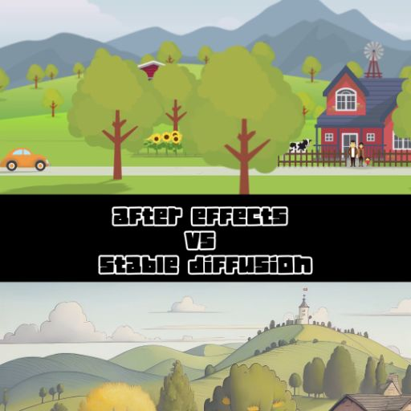
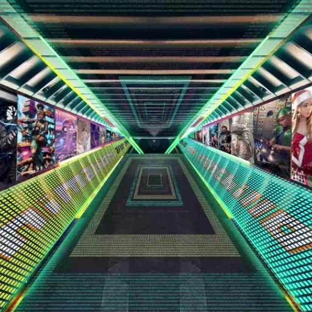
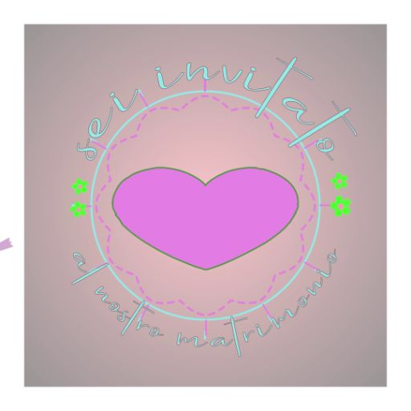
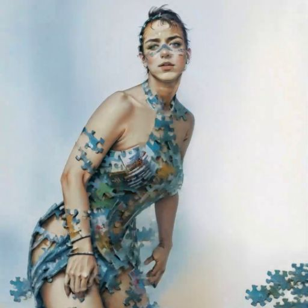

After Effects Videos
Questi video rappresentano un esempio di ciò che è possibile realizzare con questo software. Per chi desidera avvicinarsi ad AE, consiglio vivamente il canale YouTube Motion Graphics Tutorials.
Questi video rappresentano un esempio di ciò che è possibile realizzare con questo software. Per chi desidera avvicinarsi ad AE, consiglio vivamente il canale YouTube Motion Graphics Tutorials.




Automatic1111 / Deforum
La mia passione per i video generati tramite IA è nata dopo aver scoperto le incredibili creazioni di due ragazzi su TikTok. Se volete ammirare video davvero spettacolari, vi consiglio di dare un'occhiata ai loro profili su TikTok:
Andrea Kovalsky , CyberFlow.ai.
La mia passione per i video generati tramite IA è nata dopo aver scoperto le incredibili creazioni di due ragazzi su TikTok. Se volete ammirare video davvero spettacolari, vi consiglio di dare un'occhiata ai loro profili su TikTok:
Andrea Kovalsky , CyberFlow.ai.


ComfyUI
I video generati con Deforum su Automatic1111 sono interessanti, ma ComfyUI è davvero una rivoluzione! Essendo un progetto open source, è supportato da una comunità globale di utenti che lavorano costantemente per aggiungere integrazioni straordinarie. Dall’implementazione di modelli LLM al 3D.. le possibilità sembrano davvero infinite!
I video generati con Deforum su Automatic1111 sono interessanti, ma ComfyUI è davvero una rivoluzione! Essendo un progetto open source, è supportato da una comunità globale di utenti che lavorano costantemente per aggiungere integrazioni straordinarie. Dall’implementazione di modelli LLM al 3D.. le possibilità sembrano davvero infinite!
Hailuo
Hailuo rappresenta un approccio unico ai video generati con l'intelligenza artificiale, combinando precisione tecnica e un'interfaccia intuitiva. Questo strumento offre una vasta gamma di possibilità creative, dalla generazione di sequenze fluide al controllo dettagliato su ogni aspetto del video. Perfetto per chi cerca risultati professionali con un tocco di personalizzazione.
Hailuo rappresenta un approccio unico ai video generati con l'intelligenza artificiale, combinando precisione tecnica e un'interfaccia intuitiva. Questo strumento offre una vasta gamma di possibilità creative, dalla generazione di sequenze fluide al controllo dettagliato su ogni aspetto del video. Perfetto per chi cerca risultati professionali con un tocco di personalizzazione.
Luma Dream Machine
Dream Machine trasforma i sogni in realtà visiva. Questo software innovativo permette di generare video con una qualità cinematografica, enfatizzando dettagli e atmosfere che catturano l’immaginazione. Dalle texture realistiche alle transizioni oniriche, Dream Machine è la scelta ideale per chi vuole creare video che lasciano il segno.
Dream Machine trasforma i sogni in realtà visiva. Questo software innovativo permette di generare video con una qualità cinematografica, enfatizzando dettagli e atmosfere che catturano l’immaginazione. Dalle texture realistiche alle transizioni oniriche, Dream Machine è la scelta ideale per chi vuole creare video che lasciano il segno.
Kling
Kling è una soluzione sorprendente per la creazione di video con intelligenza artificiale, ideale per chi desidera sperimentare stili visivi fuori dal comune. Grazie alle sue funzioni avanzate e alla capacità di interpretare input complessi, Kling è lo strumento perfetto per creare opere uniche e accattivanti, combinando arte e tecnologia.
Kling è una soluzione sorprendente per la creazione di video con intelligenza artificiale, ideale per chi desidera sperimentare stili visivi fuori dal comune. Grazie alle sue funzioni avanzate e alla capacità di interpretare input complessi, Kling è lo strumento perfetto per creare opere uniche e accattivanti, combinando arte e tecnologia.

D-ID
D-ID è una rivoluzione nella generazione video, progettata per portare le immagini statiche a un livello successivo. Con un focus su animazioni facciali e narrazioni emozionali, D-ID è lo strumento perfetto per trasformare foto in storie animate che catturano l'attenzione e trasmettono messaggi potenti.
D-ID è una rivoluzione nella generazione video, progettata per portare le immagini statiche a un livello successivo. Con un focus su animazioni facciali e narrazioni emozionali, D-ID è lo strumento perfetto per trasformare foto in storie animate che catturano l'attenzione e trasmettono messaggi potenti.